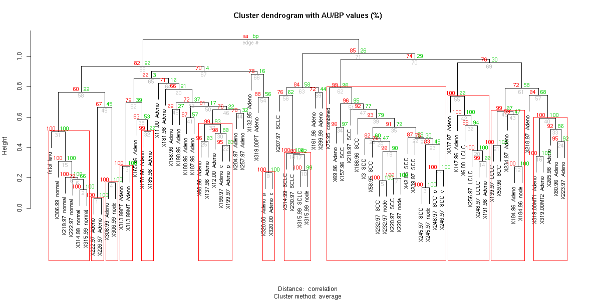

Ryota Suzuki

| Quick Links: | What is pvclust? | Installation | Download | Basic usage and examples | Online Instruction | Links |
|---|
pvclust is an R package for assessing the uncertainty in hierarchical cluster analysis. For each cluster in hierarchical clustering, quantities called p-values are calculated via multiscale bootstrap resampling. P-value of a cluster is a value between 0 and 1, which indicates how strong the cluster is supported by data.
pvclust provides two types of p-values: AU (Approximately Unbiased) p-value and BP (Bootstrap Probability) value. AU p-value, which is computed by multiscale bootstrap resampling, is a better approximation to unbiased p-value than BP value computed by normal bootstrap resampling.
pvclust performs hierarchical cluster analysis via function hclust and automatically computes p-values for all clusters contained in the clustering of original data. It also provides graphical tools such as plot function or useful pvrect function which highlights clusters with relatively high/low p-values. Furthermore, parallel computation is available via snow package.
An example of analysis on Boston data (in library MASS) is shown in the right figure. 14 attributes of houses are examined and hierarchical clustering has been done. Values on the edges of the clustering are p-values (%). Red values are AU p-values, and green values are BP values. Clusters with AU larger than 95% are highlighted by rectangles, which are strongly supported by data.
pvclust can be easily installed from CRAN. Run R on your machine (with internet access) and simply type as follows:
install.packages("pvclust")
On Windows you can use Packages -> Install package(s) from CRAN... from menu bar. On Mac OS X, you can use Packages & Data -> Toggle Package Installer. Source package is also available from the following links.
The latest version should be found at the CRAN web site
pvclust and its supporting document are also available from this web site:[FAQ]
Q. Is it possible to use a distance function which is not defined in "method.dist" argument?
A. Try the unofficial version below (only source files are available). Please be careful because this is not well tested. This feature will be included in the next release.
pvclust unofficial version 090824: zip
example(pvclust) will give you the idea of what the package can do, as well as how to use it. This example requires MASS package and may take about a few minutes. The source code of this example can be seen in help(pvclust).
An example of DNA microarray data analysis is also available by example(lung). Please be aware that this example may take ten or more minutes. If parallel computing is available on your machines, we recommend the use of parPvclust function with snow package. See sample section of help(lung) and help(parPvclust). The result of this example is shown below.

This section gives a quick instruction about the usage of package pvclust. First load the package as follows:
> library(pvclust)Then load a data file into R object. In general, data files can be loaded using functions such as read.table or read.csv. Here we use a sample data set lung by function data as:
> data(lung)The data are contained in a data.frame object which has a matrix-like structure. For example, the first three entries (rows) of the first three variables (columns) can be accessed as:
> lung[1:3,1:5]| fetal_lung | 232-97_SCC | 232-97_node | 68-96_Adeno | 11-00_Adeno | |
| IMAGE:196992 | -0.40 | 4.28 | 3.68 | -1.35 | -1.74 |
| IMAGE:587847 | -2.22 | 5.21 | 4.75 | -0.91 | -0.33 |
| IMAGE:1049185 | -1.35 | -0.84 | -2.88 | 3.35 | 3.02 |
In the lung data object, rows correspond to genes and columns to individuals. We conduct cluster analysis of individuals to classify individuals according to their expression patterns of genes. The main feature of pvclust is p-value calculation of clusters via multiscale bootstrap analysis.
Then we conduct hierarchical cluster analysis with multiscale bootstrap with number of bootstrap 1000, using average method and correlation-based dissimilarity matrix as follows:
> result <- pvclust(lung, method.dist="cor", method.hclust="average", nboot=1000)It took us about 24 minutes on our Intel Celeron (R) 2.53GHz Windows PC with 512MB RAM. Function plot displays the result of cluster analysis, and pvrect highlights clusters with high AU p-values, for example, higher than 0.95 as:
> plot(result)For a cluster with AU p-value > 0.95, the hypothesis that "the cluster does not exist" is rejected with significance level 0.05; roughly speaking, we can think that these highlighted clusters does not only "seem to exist" caused by sampling error, but may stably be observed if we increase the number of observation.
However, the AU p-values themselves include sampling error, since they are also computed by a limited number of bootstrap samples. The standard errors of AU p-values can graphically be checked by function seplot (a new feature of version 1.1-0) as:
> seplot(result)The plot shows there are some clusters whose standard values are extremely high (larger than 0.6 with AU p-values around 0.8). To examine these clusters more closely, interactive identification is also available by seplot with identify=TRUE option. Left-click the points of interest followed by typing as:
> seplot(result, identify=TRUE)Right-click -> "Stop" to exit from the interactive mode (for Windows). The edge numbers of those clicked are printed in the plot, and also printed in the console. In this example, they are the 21st and 31st clusters. Then check the estimated values of these clusters with print function as:
> print(result, which=c(21, 31))Take the 21st cluster for example. AU p-value is estimated as 0.795, with SE (standard error) 0.733. By an analogue of standard normal theory, the "true" AU p-value is roughly estimated to exist in between (AU - 2 * SE) and (AU + 2 * SE). From this rough inference, the true AU p-value seems to be in between -0.671 and 2.261. However AU is defined to be between 0 and 1, so this inference is of no meaning (Note: As shown in this example, the normal approximation fails for such large SE values. There is a better approximation for constructing confidence intervals based on z-values, though not yet implemented in our package. This feature will be included in a future release).
As this example shows, computation of AU p-value via multiscale bootstrap resampling requires comparatively large number of bootstrap sample size, which can be specified by nboot option. We recommend to use nboot = 1000 for testing at first, and then use nboot = 10000 for smaller error.
To obtain a clearer result, we conduct the same analysis with nboot = 10000:
> result10k <- pvclust(lung, method.dist="cor", method.hclust="average", nboot=10000)It took us about four hours on our Intel Celeron (R) 2.53GHz Windows PC with 512MB RAM. This high time consumption is the primal reason why we recommend to test the program with nboot = 1000 at first. If a PC cluster system is available in your environment, computational time can considerably be reduced by using parPvclust, the parallel version of pvclust with the help of snow package.
Now let us see how the result changed:> print(result10k, which=c(21, 31))
AU p-values changed to 1 with standard errors 0. In need of more precise expression, the precision of values can be changed with digits option as:
> print(result10k, which=c(21, 31), digits=5)This result suggests that the existence of these two clusters are strongly supported by data, with more than 99.9% confidence. We should also examine the standard errors of other clusters as well:
> seplot(result10k)As the plot shows almost all the clusters have standard errors smaller than 0.01. For those with somewhat higher values, we examine them with identify option and print function again:
> x <- seplot(result10k, identify=TRUE)Now take our attention on the 2nd cluster. By applying 2 * SE rule again, the "true" AU p-value may exist between 0.952 and 1.0. Most commonly we adopt 95% significance level, so it seems to be enough stable to conclude that the existance of this cluster.
If you are more conservative and need 99% significance level, it is required to decrease the standard error down to 0.002, 10 times less than that of nboot = 10000. Generally to decrease the standard error of AU p-value down to A times less than current estimate, the number of bootstrap (nboot) should be increased by A^2 times. In this example, you may need 10,000 * 10^2 = 1,000,000 as the number of bootstrapping. In this example it seems to be reasonable to compromise with conclusion at 95% significance level.
If you are familiar with (or interested in) the algorithm of multiscale bootstrap resampling, its curve fitting process can be also accessed for diagnostic by function msplot as:
> msplot(result10k, edges=x)Finally display the result with nboot = 10000. Although an overall results did not change from nboot = 10000, we are more confident of the estimation accuracy of AU p-values as well as the existance of highlighted clusters.
> plot(result10k)